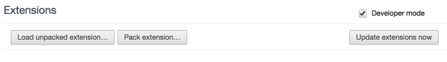

Private Data Donor
Chrome extension is monitoring Google search engine use patterns. Search engine queries are saved and periodically submitted to our server. Currently the extension works in NoPrivacy mode, which means that privacy-preserving protocols are not used.
Our server receives raw search engine queries and links the user has clicked on. The submission to server takes place over an encrypted channel.
Note, if you install the extension using the method on the right,
How to install the extension
Caveat. In development mode, we did not submit the extension to Chrome App Store. This means that the installation process is a bit complicated than with normal extensions.
- Download the extension from here. Warning: right-click and pick "Save link as".
- Tick the „Developer mode” 
- Drag and drop the extension file (sdaq.crx) from the filesystem, to the chrome://extensions page in Chrome.
- See the welcome tab with Participant Information, you can enter demography data.
- It should now work. Open e.g. www.google.com. Search for something. Submissions to the server are periodic.
Warning. After a restart of Google Chrome, the browser disables extension not present in Chrome App Store. To mitigate this issue, please do some of the following:
- Remove sdaq.crx, repeat the procedure above, OR
- Unzip sdaq.crx in a directory, then click on "Load unpacked extension", OR
- Download Chromium browser from here and then just navigate to sdaq.crx. This version of Chromium is not disabling extensions. The extension will be kept after a browser restart.